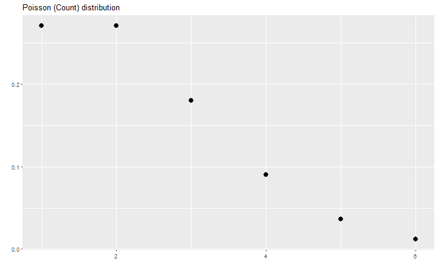

titlepage
Statistics
The practice or science of collecting and analysing numerical data in large quantities, especially for the purpose of inferring proportions in a whole from those in a representative sample.
OED definition
Statistics is the study of the collection, analysis, interpretation, presentation, and organization of data.
The Oxford Dictionary of Statistical Terms
Randomness
The quality or state of lacking a pattern or principle of organization; unpredictability
OED definition
History
- world's first statistics department at University College London in 1911
- born in WW2: S-Branch
- RNG back then: lottery balls, and women picking "random"
Distributions
Histogram
# warning suppressed: non-finite values removed
dta.distance %>%
#filter(minutes < 120) %>%
ggplot()+
geom_histogram(aes(x=minutes))+
#geom_line(stat="density", aes(x=minutes), colour = "red")+
xlim(0, 100)+
labs(
title = "Commute time of BB DUS employees",
y = NULL
)

Density estimates
# warning suppressed: non-finite values removed
dta.distance %>%
#filter(minutes < 120) %>%
ggplot()+
geom_histogram(aes(x=minutes, y=..density..))+
geom_line(stat="density", aes(x=minutes), colour = "red")+
xlim(0, 100)+
labs(
title = "Commute time of BB DUS employees",
y = NULL
)

Uniform distribution
# x values for plotting
x <- seq(-5, 5, by = 0.01)
ggplot()+
# normal distribution
geom_line(
aes(x=x, y=dunif(x, -4, 4)), size = 1.5#, colour = cbgPalette[6]
)+
labs(x = "", y = "", title = "Uniform distribution")

Poisson (Count) distribution
ggplot()+
# normal distribution
geom_point(
aes(x=unique(as.integer(x)), y=dpois(unique(as.integer(x)), 2)), size = 3.5#, colour = cbgPalette[2]
)+
labs(x = "", y = "", title = "Poisson (Count) distribution")

Normal (Gaussian) distribution
ggplot()+
# normal distribution
geom_line(
aes(x=x, y=dnorm(x)), size = 1.5#, colour = cbgPalette[6]
)+
# # lognormal distribution
# geom_line(
# aes(x=x, y=dlnorm(x)), size = 1.5, colour = cbgPalette[6]
# )+
labs(x = "", y = "", title = "(Standard-) Normal distribution")

explain distributions
- most (nice) distributions can be explained by moments
- mean (average)
- standard deviation/variance
- for the Normal distribution: \[X \sim \mathcal{N}(\mu,\sigma^2)\]
- \(\mu = E[X]\)
- \(\sigma = \sqrt{E[(X-\mu)^2]}\)
- \(\sigma = \sqrt{E[X^2] - (E[X])^2}\)
Mean and Standard Deviation

Median
Correlation
Bonus: Anscombe's Quartet
- Anscombe, Francis J. (1973) Graphs in statistical analysis. American Statistician, 27, pp. 17–21.
- four \(x, y\) datasets which have equal properties:
- mean, variance, correlation, linear regression
- \[y = 4 + 0.346x\]
- showcase for data exploration!
anscombe.dta <- NULL
for(i in 1:4){
anscombe.dta <- bind_rows(
anscombe.dta, tibble(anscombe.set = letters[i], x = anscombe[, i], y = anscombe[, i+4])
)
}
anscombe.dta %>%
ggplot(aes(x, y))+
geom_point()+
geom_smooth(method = "lm", se = FALSE)+
facet_grid(. ~ anscombe.set)+
labs(
x = "x-values", y = "y-values", title = "Anscombe's Quartet"
)

Correlation vs Causation
(Statistics) A quantity measuring the extent of the interdependence of variable quantities.
OED definition
# correlation
cor.dta <- data.frame(
x = runif(100, min = 0, max = 10)
) %>%
mutate(
a = x + runif(100, -1, 1),
b = x + runif(100, -1, 1)
)
gg <- ggplot(cor.dta)+
geom_point()+
aes(x=a, y=b)+
geom_smooth()+
labs(x=NULL, y=NULL, title = "Scatterplot of A and B")
gg

gg+
geom_text(aes(x = 1, y = 9), label = "A=X+U[-1,1]\n B=X+U[-1,1]\n X~U[0,10]", hjust=0)

Linear Regression
\[y_i = \beta_0 + \beta_i + \varepsilon_i\]
- fitted values: \[\hat y = b_0 + b_ix_i\]
- residuals: \[e_i = y_i - \hat y_i\]
- statistical difference/significance
- show how two data dots come from the same distribution and can be different
- t-test
Lesson 1: Visualizing relationships in data
Seeing relationships in data and predicting based on them; Simpson's paradox Lesson 2: Probability
Probability; Bayes Rule; Correlation vs. Causation Lesson 3: Estimation
Maximum Likelihood Estimation; Mean, Median, Mode; Standard Deviation, Variance Lesson 4: Outliers and Normal Distribution
Outliers, Quartiles; Binomial Distribution; Central Limit Theorem; Manipulating Normal Distribution Lesson 5: Inference
Confidence intervals; Hypothesis Testing Lesson 6: Regression
Linear regression; correlation Lesson 7: Final Exam